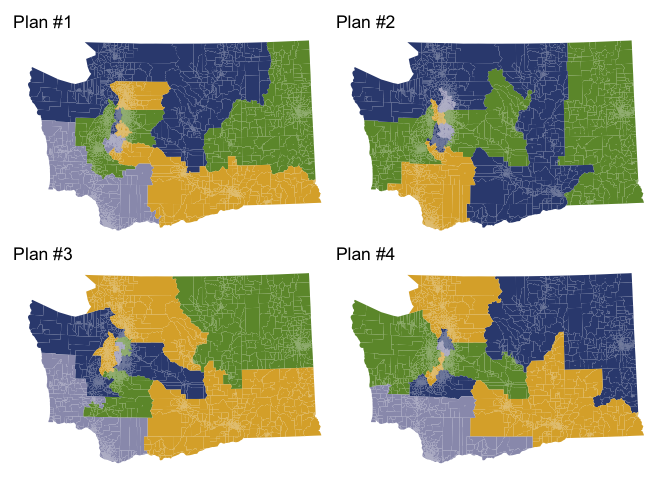
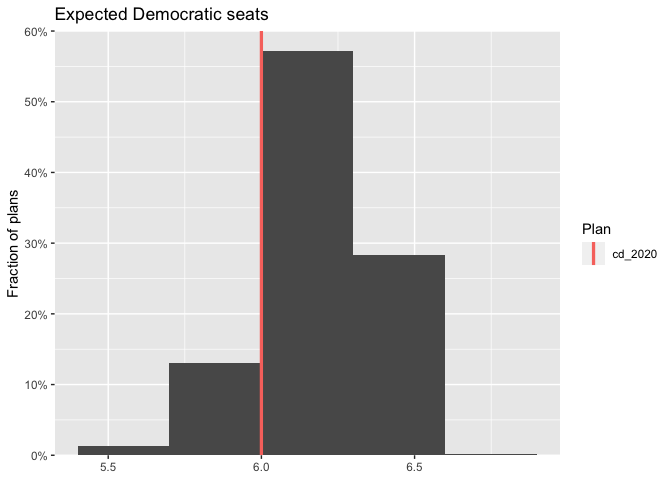

alarmdata provides utility functions to download and process data produced by the ALARM Project, including 2020 redistricting files and 50-State Redistricting Simulations.
Installation
You can install alarmdata with:
install.packages("alarmdata")You can also install the development version from GitHub with:
# install.packages("remotes")
remotes::install_github("alarm-redist/alarmdata")Example
We can easily download simulation data for a state and make some plots.
library(alarmdata)
library(redist)
map_wa = alarm_50state_map("WA")
plans_wa = alarm_50state_plans("WA")
redist.plot.plans(plans_wa, draws=1:4, shp=map_wa)

Downloads will go to options(alarm.cache_dir) if it is set. If it is not, and options(alarm.use_cache = TRUE), downloads will be cached between sessions in rappdirs::user_cache_dir("alarm"). If If options(alarm.use_cache = FALSE) (the default), then the cache will be in a temporary directory that does not persist between sessions. You can check the size of the cache and clear it with alarm_cache_size() and alarm_cache_clear().